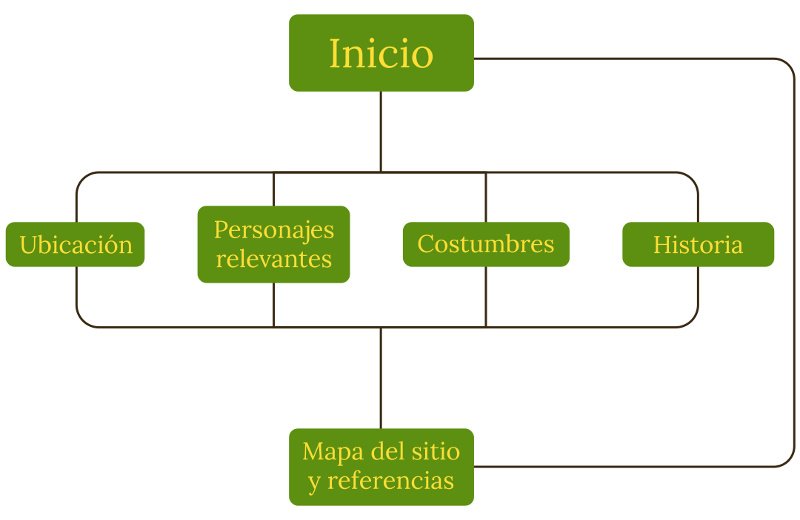

Mapa del sitio
Referencias
Para la creación de este sitio web, se han consultado los siguientes enlaces externos
- https://avatar.fandom.com/es/wiki/Mapa_del_Mundo_de_Avatar
- https://avatar.fandom.com/es/wiki/Ba_Sing_Se
- https://avatar.fandom.com/es/wiki/Kuei
- https://avatar.fandom.com/es/wiki/Lavado_de_cerebro
- https://avatar.fandom.com/es/wiki/Escape_del_Mundo_de_los_Esp%C3%ADritus
- https://avatar.fandom.com/es/wiki/Moda_en_el_Mundo_AvataR
- https://www.imdb.com/title/tt0876938/mediaindex
- https://avatar.fandom.com/es/wiki/Escape_del_Mundo_de_los_Esp%C3%ADritus
- https://avatar.fandom.com/es/wiki/Long_Feng
- https://avatar.fandom.com/es/wiki/T%C3%A9
- https://avatar.fandom.com/es/wiki/Universidad_de_Ba_Sing_Se
- https://www.deviantart.com/solkorra/art/Avatar-Font-Herculanum-by-SolKorra-375676471
- https://fonts.google.com/
- Mapa de Ba Sing Se realizado por Daniela Andrade (sin link de contacto)